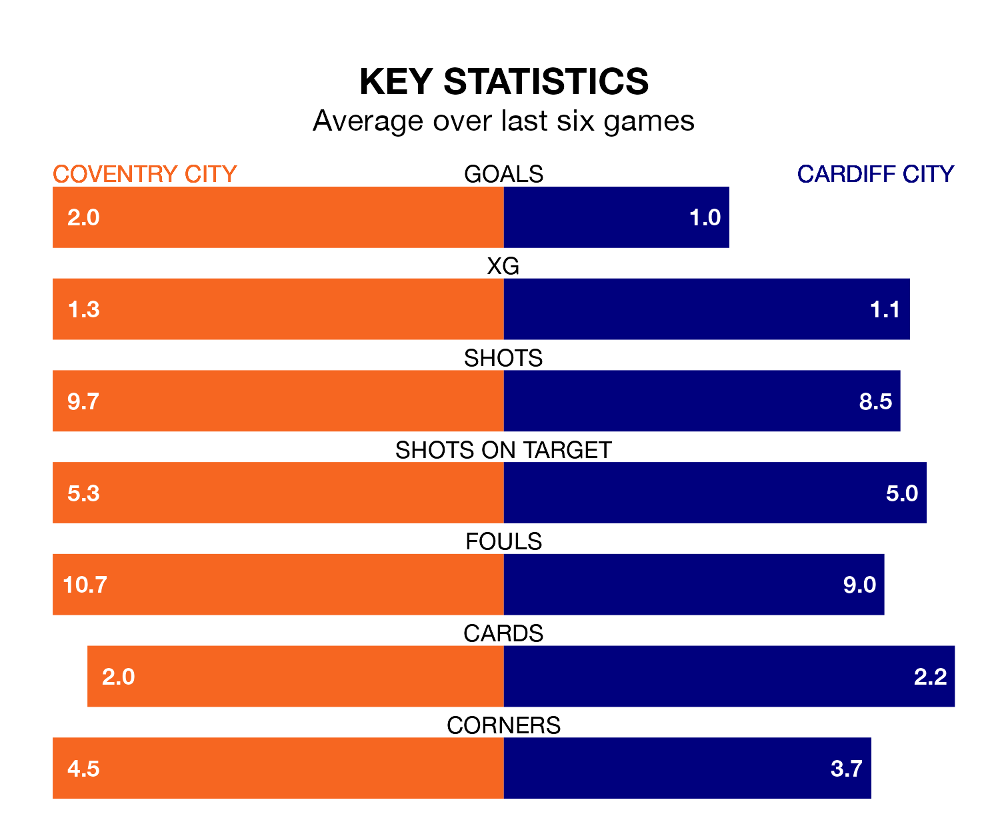

Coventry City are heavy favourites to keep all three points at home in Monday's kick-off against Cardiff City.
The Sky Blues, who sit seventh in EFL Championship with 38 games played, are priced at 1.6 to seal victory at the Coventry Building Society Arena.
Sitting four places and seven points behind them in the table, Cardiff are 5.0 to win with *Betting Company*, while the draw is at 4.0.
With 62 goals in 38 games so far this season, Coventry are scoring more than average in the league with 1.6 goals per game. And they are conceding fewer than average, letting in 44 goals at a rate of 1.2 per game.
Cardiff, meanwhile, are below average scorers, with 1.1 goals per game, compared to a league average of 1.4. They have conceded 1.4 goals per game.
In the last 10 years, Coventry and Cardiff have played each other on eight occasions. Coventry won three of them, Cardiff four, and they drew once.
On average, the Sky Blues scored 0.9 goals and the Bluebirds 1.2 in those matches.
Their last meeting was on September 19, when Cardiff won 3-2 at home.
In Haji Wright, Coventry City have one of the league's most on-form strikers so far this season. He has notched 14 goals in 36 appearances, to sit sixth in the scoring charts.
His goal rate of one every 164 minutes is slightly quicker than that of Ike Ugbo, Cardiff City's top scorer with a goal every 178 minutes, and a total of 10 goals in 32 games.
The Sky Blues are in reasonable form in EFL Championship, with four wins and two losses from their last six games.
And also with four wins and two losses over that period, the Bluebirds' form is identical – they have both taken 12 points from 18.
Coventry's last match was on Friday, a 3-1 win against Huddersfield Town, with Ellis Simms (two) and Wright getting the goals for the Sky Blues.
Cardiff lost 2-0 against Sunderland last time out, also on Friday.
Monday's match will be refereed by Leigh Doughty, who has taken charge of 10 EFL Championship games so far this season, issuing one red card and booking 40 players. He has not awarded any penalties.
The last Coventry game Doughty refereed was a 2-2 home draw with Bristol City on January 30. His last Cardiff match was their 0-0 draw at home against Blackburn Rovers on February 20.
Updated: 10:31 (UTC), 31/03/24